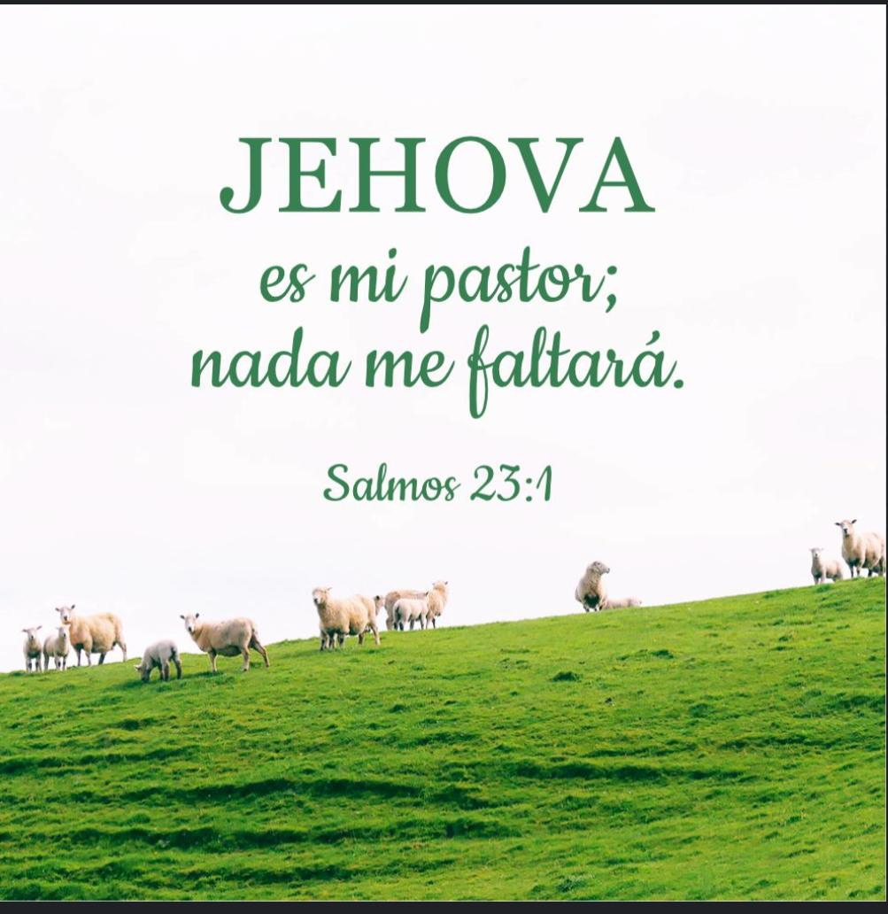

Página 1
Nombre del alumno: Carlos Isaias Osorio Tum.
Grado y sección: 5to bachillerato en computación "B".
Instituto: Instituto Nacional de Educación Diversificada, (INED.)
Profesor: César Augusto Chiché Rosales.
El párrafo bíblico:
"Salmos 23:1":
Jehová es mi pastor nada me faltará,
en lugares de delicados pastos me hará descansar junto
a aguas de reposo me pastoreara, conformará mi alma
me guiará por senda de justicia por amor de su nombre.

Un link aqui:
Datos biblicos